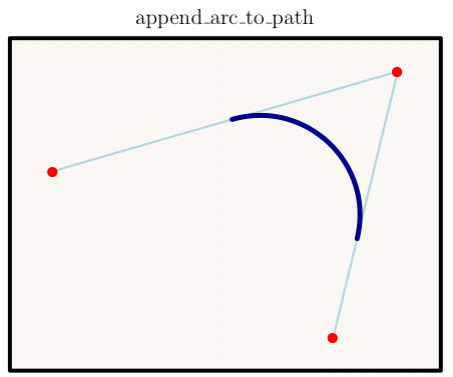

class Tioga::Arcs_and_Circles
These are the methods for creating and using arcs and circles in PDF graphics.
Public Instance Methods
Like adding lines from start to corner to end, but with the corner rounded with a radius equal to the minimum of the actual output distances for dx and dy.
The illustration shows in dark blue the arc that is added for the control points given in red.

# File lib/Tioga/Arcs_and_Circles.rb, line 16 def append_arc_to_path(x_start, y_start, x_corner, y_corner, x_end, y_end, dx, dy) end
Create a circle with center at (x, y) having radius r (given in x units).
# File lib/Tioga/Arcs_and_Circles.rb, line 20 def append_circle_to_path(x, y, r) end
Equivalent to the following: create a unit circle with center at (x, y), scale it by dx in the x direction, scale it by dy in the y direction, then rotate it counter-clockwise by angle degrees.
# File lib/Tioga/Arcs_and_Circles.rb, line 41 def append_oval_to_path(x, y, dx, dy, angle) end
Calls #append_circle_to_path followed by clip.
# File lib/Tioga/Arcs_and_Circles.rb, line 24 def clip_circle(x, y, r) end
Calls #append_oval_to_path followed by clip.
# File lib/Tioga/Arcs_and_Circles.rb, line 45 def clip_oval(x, y, dx, dy, angle) end
Calls #append_circle_to_path followed by fill_and_stroke.
# File lib/Tioga/Arcs_and_Circles.rb, line 36 def fill_and_stroke_circle(x, y, r) end
Calls #append_oval_to_path followed by fill_and_stroke.
# File lib/Tioga/Arcs_and_Circles.rb, line 57 def fill_and_stroke_oval(x, y, dx, dy, angle) end
Calls #append_circle_to_path followed by fill.
# File lib/Tioga/Arcs_and_Circles.rb, line 28 def fill_circle(x, y, r) end
Calls #append_oval_to_path followed by fill.
# File lib/Tioga/Arcs_and_Circles.rb, line 49 def fill_oval(x, y, dx, dy, angle) end
Calls #append_circle_to_path followed by stroke.
# File lib/Tioga/Arcs_and_Circles.rb, line 32 def stroke_circle(x, y, r) end
Calls #append_oval_to_path followed by stroke.
# File lib/Tioga/Arcs_and_Circles.rb, line 53 def stroke_oval(x, y, dx, dy, angle) end